In the ZyLAB ONE Information Management Add-on you can search via the search field in the menu:
Attention: The results are displayed in ZyLAB ONE Legal Review.
For more information on search techniques, see the ZyLAB ONE Search Language Guide.
You may not be able to perform all features described below. This depends on the role that has been assigned to you.
Search & share in ZyLAB Legal Review
-
Navigate to the start page, the home page of Legal Review.
Tip: Make this link your favorite, if you have not done so already. - Select the matter you want to search, via Open Matter or Open Another Matter.
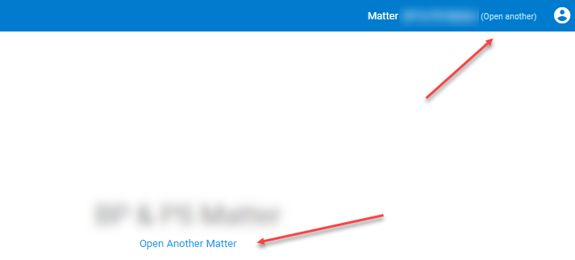
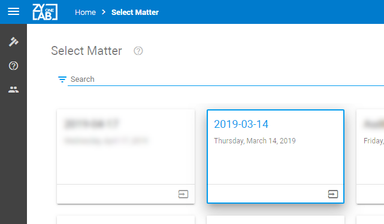 -
Select Browse:
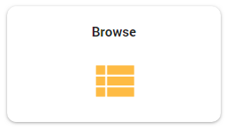 - Choose from the following search methods:
- Search the contents of all documents via the search field.
For example, enter the word "amsterdam" and click Search.
Click the help icon for more information on searching.
for more information on searching.
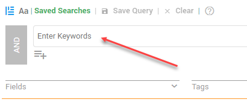 - Search for a specific number or name, depending on the structure of the matter (the archive).
The best way to do this is via the facets (pie charts).
For example, enter the number "070" and the facet will be automatically filtered.
- Search using a combination of both search methods. For example, the word "amsterdam" within the file "070".
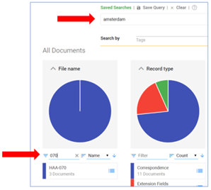
- Search the contents of all documents via the search field.
- View the search results in the document list:

- You can open each document in the document list.

- In each open document you will find several navigation features, such as marked yellow hits, previous/next document and the extra search field (Ctrl+F to search in the document (purple hits)).
You can follow the bread crumbs in the menu to go back in the search history.
- In each open document you will find several navigation features, such as marked yellow hits, previous/next document and the extra search field (Ctrl+F to search in the document (purple hits)).
- Adjust the layout of the Document List by (de)selecting columns:
First, select Settings: 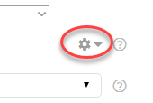
Then, Columns:
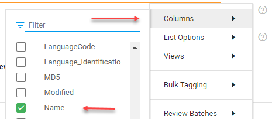
Select all columns (field names/metadata) you want to show in the Document List. - Save the new view via Settings > Views. Enter a name for the new view.
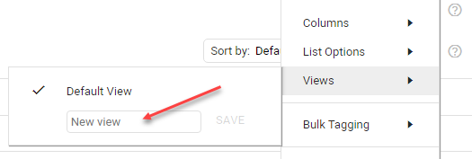 - Share the saved view. Click Edit view and select the Shared With tab.
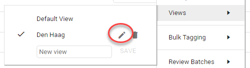
Find the persons you want to share the view with:
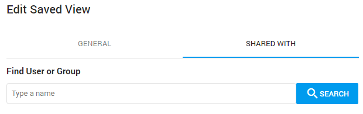 - You can also share the (adjusted) Document List by downloading the list (including columns) to Excel:
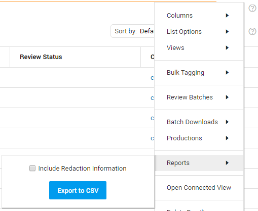